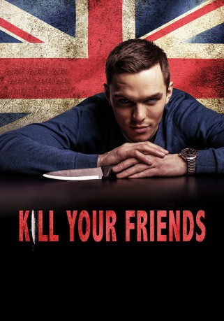

#7948 Kill Your Friends
 
 IMDB-Wertung: 6.1 / 10
IMDB-Wertung: 6.1 / 10  Metascore: 0
Metascore: 0 
Im Jahr 1997 ist die BritPop-Welle auf ihrem Höhepunkt und der Musik-Manager Steven Stelfox tut alles dafür, um das nächste große Talent ausfindig zu machen. Vollgepumpt mit Leidenschaft, Ambitionen und jeder Menge Drogen sucht er immer nach den neuesten Hits - schließlich sollen sich die Kassen seines Musiklabels ordentlich füllen. Dabei hat er aber nicht nur den Profit, sondern stets auch seinen persönlichen Aufstieg im Business im Blick. Doch als der Wendepunkt des Hypes erreicht ist, bringt die Beförderung eines konkurrierenden Kollegen das Fass für den krankhaft ehrgeizigen Stelfox zum Überlaufen und er nimmt die Redewendung "ein Mordsding" etwas zu wörtlich. Aber auch nachdem der Rivale aus dem Weg geräumt ist, wächst der Erfolgsdruck: So zieren immer mehr blutige Spuren seine Karriereleiter...
Jahr: 2015
Dauer: 103 Minuten
FSK: 16
Land: England Studio: Ascot Elite Entertainment GroupTonspuren: DTS - ,
Untertitel: Deutsch,
Auflösung: 1080p (1920x800) Größe: 6533 MB
Genre: Thriller, Musik, Komödie, Krimi
Regisseur: Owen Harris
Drehbuch: John Niven
Soundtrack: Junkie XL
Darsteller:
 Nicholas Hoult als Steven Stelfox
Nicholas Hoult als Steven Stelfox James Corden als Roger Waters
James Corden als Roger Waters Georgia King als Rebecca
Georgia King als Rebecca Craig Roberts als Darren
Craig Roberts als Darren Jim Piddock als Derek Sommers
Jim Piddock als Derek Sommers Joseph Mawle als James Trellick
Joseph Mawle als James Trellick Dustin Demri-Burns als David Schnieder
Dustin Demri-Burns als David Schnieder- Damien Molony als Ross
 Bronson Webb als Rob Hasting
Bronson Webb als Rob Hasting Ella Smith als Nikki
Ella Smith als Nikki Rosanna Hoult als Katy
Rosanna Hoult als Katy Ed Skrein als Rent
Ed Skrein als Rent- Tom Riley als Parker Hall
- Kurt Egyiawan als Tim
 Hugh Skinner als John
Hugh Skinner als John Moritz Bleibtreu als Rudi
Moritz Bleibtreu als Rudi Alex Gillison als Gunter
Alex Gillison als Gunter Osy Ikhile als Rage
Osy Ikhile als Rage David Avery als Fisher
David Avery als Fisher- Alannah Olivia als Songbird Suzy
- Danielle Walters als Songbird Tiffany
 Edward Hogg als DC Woodham
Edward Hogg als DC Woodham- Thomas Ottersen als Jimmy Stein
 Al Weaver als Bill
Al Weaver als Bill- Kelly Burke als Emma
 Rosanna Arquette als Barbara
Rosanna Arquette als Barbara- Russell Kilmister als Colin
 Jumayn Hunter als Rory
Jumayn Hunter als Rory- Holly Coleman als Rudi's Girl #1
 Jill Buchanan als The Office Cleaner (uncredited)
Jill Buchanan als The Office Cleaner (uncredited)- John Carr als Police Officer (uncredited)
 Bern Collaço als First Class Airplane Passenger (uncredited)
Bern Collaço als First Class Airplane Passenger (uncredited)- Elizabeth Dyer als Waitress (uncredited)
 Erick Hayden als Jim Powell (uncredited)
Erick Hayden als Jim Powell (uncredited)- Samantha Hindman als Swearing Club Girl (uncredited)
- Lukas Landau als Office Worker (uncredited)
- Laurent C. Lucas als Clubber (uncredited)
- Rachel Marquez als Executive Assistant (uncredited)
- Lindy Pieri als Airline Passenger (uncredited)
 Deborah Rosan als Actress (uncredited)
Deborah Rosan als Actress (uncredited)- Tony Paul West als (uncredited)
- Ieva Andrejevaite als Anna
- Charlie Anson als Press Officer
- Ria Zmitrowicz als Songbird Chantelle
- Cerise Reid als Songbird Debbie
- Frida Sundemo als Marcy
- Lewis Watson als The Lazies Band
- Rob Austen als The Lazies Band
- Adam Double als The Lazies Band
- Dinita Gohil als MTV Newsreader
Datei: X:\2015(G-M)\Kill Your Friends (2015, FSK16, 1920x800).mkv seit 07.01.2018
Festplatte: HD 2015(A-Z)
 Es gibt insgesamt 129 Filme in der Gruppe '2015(G-M)'
Es gibt insgesamt 129 Filme in der Gruppe '2015(G-M)'